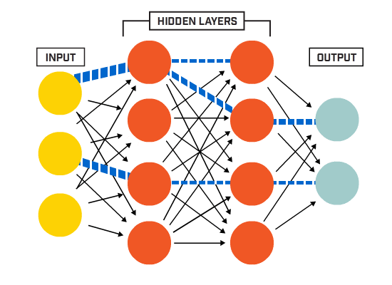

Formation au Deep-Learning
Sommaire
- Les réseau de neurones
- Les matrices : quelques rappels
- Droites de régression
- Listes de matrices
- Calcul par CPU / GPU / TPU
- Calcul d’erreur
Les Réseau de Neurones

Le réseau fully connected
Le réseau fully connected
- Un réseau de neurones est considéré « fully connected » lorsque toute entrée est relié par une arête appelé « poids » et représenté par « wi,j » à l’intégralité des neurones présents dans les couches cachées.

Le réseau fully connected
L'équation du neurone :
Sortie du Neurone = X1W1,1 + X2W2,1 + B1 = Régression lineaire

Le réseau fully connected
Avec plusieurs neurones :

Pour calculer la valeur d’un neurone, il faut effectuer la somme des connexions entrantes :
Neurone 1 = X1W1,1 + X2W2,1 + B1
Neurone 2 = X1W1,2 + X2W2,2 + B2
Le réseau fully connected
Vue matricielle :

Le réseau fully connected
La Fonction d’Activation :
(ou fonction de seuillage, ou encore fonction de transfert)
- Présente à la sortie du neurone.
- Elle répond à trois exigences:
- Non linéaire -> Pour modéliser des fonctions complexes (non linéaires)
- Différentielle -> Pour permetre la retro-propagation de l'erreur
- Monotonique -> Pour éviter de rajouter des minimums locaux

Les matrices : quelques rappels !

L'addition de matrice
L'addition de matrice
Généralités :
- L'addition des matrices est définie pour deux matrices de même type.
La somme de deux matrices de type (m, n), est obtenue en additionnant les éléments correspondants.
L'addition de matrice
Exemple avec :

L'addition de matrice
Étape 1 :
L'addition de matrice
Étape 2 :
Le produit matriciel
Le produit matriciel
Généralités :
- La multiplication des matrices n'est pas commutative, c'est-à-dire que A•B n'est pas égal à B•A.
À l’avenir, nous aurons seulement besoin de connaître le produit d’une matrice de type (1,2) et d’une matrice de type (2,2).
[!] Produit matriciel ≠ multiplication de matrice
Le produit matriciel
Exemple avec :
Le produit matriciel
Étape 1 :

Le produit matriciel
Étape 2 :

Le produit matriciel
Étape 2 :
Le produit matriciel
Étape 2 :

Le produit matriciel
Étape 3 :
Le produit matriciel
Étape 4 :

Le produit matriciel
Étape 5 :

Le produit matriciel
Étape 6 :

Droites de régression

Régression linéaire
Régression linéaire
Définition :
Désigne un modèle dans lesquels est la médiane conditionnelle de « y » sachant « x ».
Le modèle de régression linéaire est souvent estimé par la méthode des moindres carrés mais il existe aussi de nombreuses autres méthodes pour estimer ce modèle.
Régression linéaire
Représentation graphique du réseau précèdent :

Voici une droite de régression linéaire. Par définition elle suit l'équation suivante :
ax + b
Afin de mieux comprendre et de l'appliquer à notre réseau de neurone, nous pouvons l'écrire de la façon suivante :
xw + B
w : le poids
B : le biais
Régression linéaire
Représentation graphique du réseau précèdent :
Ce schéma représente ainsi la fonction d’activation
La fonction d'activation
La fonction d'activation
Définition :
- La fonction d’activation est une fonction mathématique appliquée à un signal en sortie d'un neurone artificiel. Soit dans notre cas à la droite de régression linéaire.
La fonction d'activation
Graphiquement :
La fonction d'activation
Cas pratique :
Listes de matrices
Une matrice
Une matrice
Définition :
- Une matrice est une liste de listes, une liste est une liste de vecteurs, un vecteur est une liste de chiffres.

Une matrice
Prenons pour exemple, cette image :
Une matrice
Prenons pour exemple, cette image :
| Détails image : - Dimensions : 1280 x 768 - Caractéristiques : En couleurs (3 dimensions) |
 |
Calculs par CPU / GPU / TPU

CPU versus GPU
CPU versus GPU
Le facteur nombre de cœurs :

CPU versus GPU
- Avantages :
- Accélération via GPU des applications

CPU versus GPU
Démonstration :


https://www.youtube.com/watch?v=-P28LKWTzrI
TPU ? Késako ?
TPU ? Késako ?
Définition :
- Le TPU (Tensor Processor Unit) est un module hardware dédié spécifiquement aux applications de Machine Learning

Calcul d'erreur
Notion d'erreur
Notion d'erreur
Définition :
- A chaque itération, l'algorithme va calculer un indicateur de performance globale (l'erreur qu'il commet) en comparant la sortie attendue et la sortie prédite.

Le batch
Le batch
Définition :
Le gradient descent
Le gradient descent
Définition :
Le learning rate
Le learning rate
Définition :
- Représente la taille du « pas » en avant effectuer par le système pour atteindre le point d’apprentissage le plus efficient

Le minimum local
Le minimum local
Définition :
- Le minimum local est point dans une zone où le système établit qu’il ne peut semble pense avoir obtenu la meilleure précision mais ne l’est effectivement pas sur la courbe de précision de classification.

Notion de dérivée de sigmoïde
Notion de dérivée de sigmoïde
Définition :
Notion de dérivée de sigmoïde
Définition (suite) :
Le vanishing gradients
Le vanishing gradients
Définition :
- Le vanishing gradients est une perte (ou fuite) de gradient, affectant les neurones plus profond et unités de saturations dans un réseau profond.
L'overfitting
L'overfitting
Définition :
- L’overfitting (ou surapprentissage) est une étape où le système est arrivé à reconnaitre quasi-seulement les images sur lesquelles il a été entrainé et une variation de lumière ou de milieu peut l’induire à ne pas reconnaitre l’objet.
Le cross-validation
Définition :
- La validation croisée (cross-validation) est une méthode d’estimation de fiabilité d'un modèle fondé sur une technique d'échantillonnage. Cela sert à comparer la pertinence d'un modèle par rapport à un autre.
Réseau neuronal à convolution
Les convolutions
Les convolutions
Définition :
- Les convolutions consistent en un empilage multicouche d'algorithme, dont le but est de pré-traiter de petites quantités d'informations.
Les convolutions
Cas concret :
Les blocs de construction
Les blocs de construction
Définition :
Une architecture de réseau de neurones convolutifs est formée par un empilement de couches de traitement (blocs de construction), il en existe 5 :
- la couche de convolution (CONV)
- la couche de pooling (POOL)
- la couche de correction (ReLU)
- la couche « entièrement connectée » (FC)
- la couche de perte (LOSS)
La couche de pooling
La couche de pooling
Définition :
- Le pooling (« mise en commun »), est une forme de sous-échantillonnage de l'image.
- Le pooling réduit la taille spatiale d'une image, réduisant ainsi la quantité de paramètres et de calcul dans le réseau. Il est donc fréquent d'insérer périodiquement une couche de pooling entre deux couches convolutives successives d'une architecture de réseau de neurones convolutifs pour réduire le sur-apprentissage.
La couche de pooling
[ ! ] Il existe plusieurs méthodes afin de réduire la taille spatiale d'une image concernant le pooling :
- Average pooling
- Max-pooling
- L2-norm pooling
- Stocastic pooling
Le max-pooling
Le max-pooling
Définition :
- Le max-pooling permet une réduction de la taille de la représentation en gardant seulement la plus grande valeur des tuiles dans le filtre.

Le max-pooling
Détaillons :
- Ici, nous avons un filtre de 2 x 2, avec un pas de 2
(il est possible d'avoir un filtre plus important, ou encore, de ne pas avoir de couche de pooling)
Contact
Tom DESHAIRES - MomentTech SAS

This work is licensed under a Creative Commons Attribution-NonCommercial-NoDerivatives 4.0 International License